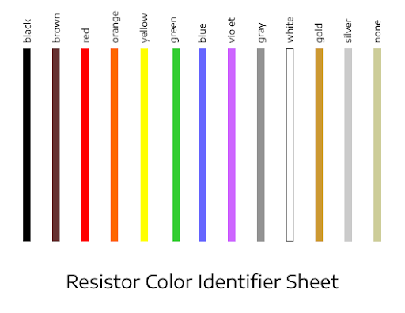
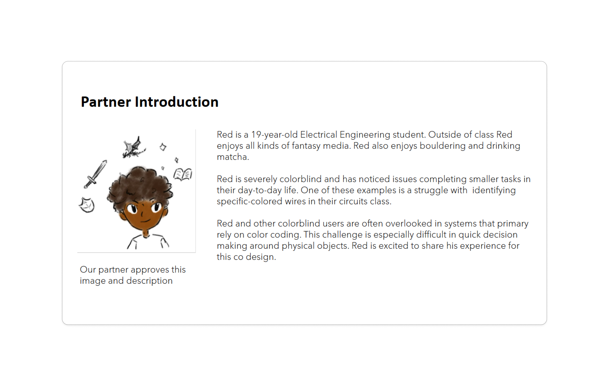
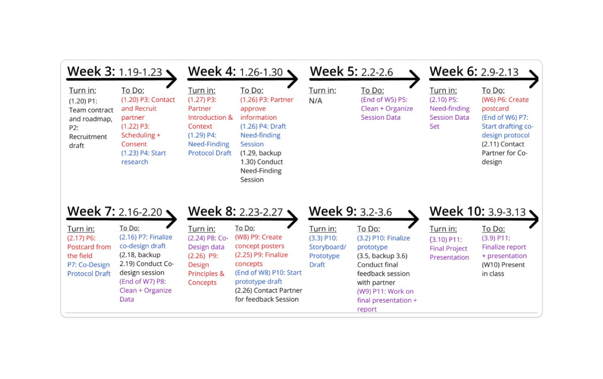
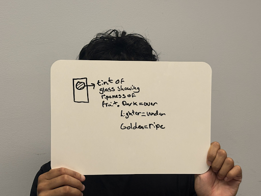
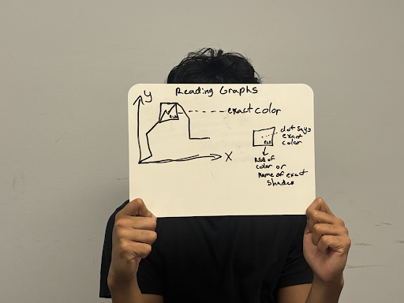
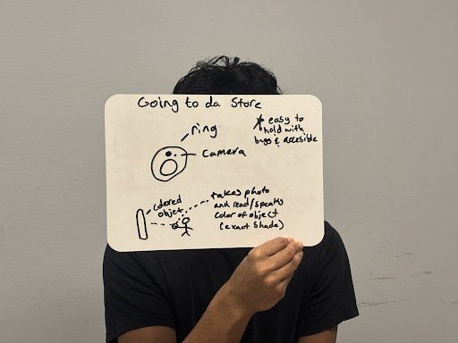
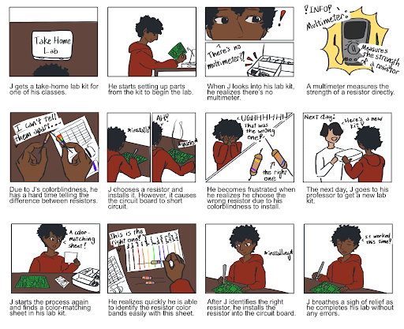

Designing an Accessible Resistor Color Sheet for Colorblind Engineering Students
Project Leader | HCDE 315 Inclusive Design

Resistors use small color bands to show their values, which makes them difficult for colorblind students to read in electrical engineering labs. I led a partner-centered design project, drawing on my own experience with colorblindness, to create a physical resistor color sheet that helps students identify resistor bands more quickly and accurately.
Project Overview
Project Leader
Inclusive Design, Accessibility, Human-Centered Design
January - March 2026 (10 weeks)
Partner Interviews, Journey Mapping, Co-Design, Storyboarding, Feedback Synthesis
My Contributions
- Led the team through a 10-week research → co-design → prototyping → testing cycle
- Drove the decision to narrow from broad colorblind accessibility to ECE lab tools
- Guided the research, co-design, and prototyping process
- Brought firsthand experience with colorblindness to the framing of the problem
The Problem
Resistor values are encoded as small colored bands, and reading them is a routine part of electrical engineering labs. For colorblind students, this creates a recurring barrier: the bands are tiny, the surfaces can be reflective, and the system depends entirely on telling colors apart.
The project began broadly, exploring accessibility needs for colorblind students across multiple contexts. After early research, we focused on ECE lab tools, where this challenge shows up every week. The design question: how might we help colorblind students identify resistor bands quickly and accurately, without changing how labs already run?
Meet Our Partner

We partnered with a colorblind ECE student who shared their personal experiences and lab pain points. Their insights shaped our design direction and kept the tool grounded in a real user's needs.
Project Roadmap & Scope

As project leader, I planned our team schedule to meet course requirements while keeping our own project properly scoped. That meant defining milestones, setting dates for each assignment, and making sure our research findings stayed aligned with our design decisions.
- Established a 10-week timeline with weekly goals and check-ins
- Prioritized research → co-design → prototyping → testing → final review
- Guided team discussions to balance open exploration with a focused ECE deliverable
Need-Finding & Research Insights
We ran two sessions with our partner. The first was a semi-structured interview with activities, including color sorting exercises and journey mapping, to capture their challenges and context. We analyzed the data for themes around pain points with existing lab tools and opportunities for accessible design.
The second was a co-design session. Using what we had learned, we sketched ideas for accessible handheld tools, a major area of need from the first interview. This session ultimately led to our final design.



Key Insights
- Small resistor bands, reflective surfaces, and reliance on color-only coding make identification difficult
- Our partner preferred low-tech, hands-free solutions that fit into existing workflows
- Contextual cues and labeling are important for accurate color identification
Low-Fidelity Prototyping
.png)
.png)
.png)
We sketched multiple concepts, including alternative color-matching strategies and physical formats, and refined them through co-design with our partner. We converged on the physical color sheet as the most practical solution.
- Explored three major concepts: a color sheet, a color-detecting ring, and a shade picker
- Chose the physical sheet based on convenience, accuracy, and partner feedback
- Incorporated partner suggestions on line thickness, labeling, and usability
Final Design
The final design (found at top of the page) is a physical sheet with color lines that match the thickness of resistor bands, each line labeled for clarity. Students align a resistor against the sheet to visually confirm its band colors before using traditional calculation tools, which improves speed, accuracy, and confidence in lab work. We also created a storyboard to show how the tool fits into a lab session.

Key Design Decisions
- Physical sheet instead of a device: Our partner wanted low-tech, hands-free tools that fit existing workflows, so the sheet needs no setup, charging, or app.
- 1:1 scale color lines: Lines match the thickness of real resistor bands, so students compare like with like instead of translating between sizes.
- Labeled lines and clear hierarchy: Research showed color-only coding is the core problem, so every color also carries a text label.
- Works in existing ECE classrooms: No additional devices are needed, which lowers the barrier to adoption.
Outcome & Reflection
The resistor color sheet is a practical, low-tech answer to a common accessibility challenge in ECE labs. Partner feedback indicates improved accuracy and efficiency when identifying resistor bands.
Partner feedback:
"I maybe would not be able to 100% figure out every color, but it would help me feel a lot more confident about my decision making."
Our partner, after reviewing the final design
This feedback shows the sheet's main strength, confidence in lab work, and also its limit: it supports color identification but doesn't replace it. That's why our next steps focus on refining line widths and visual hierarchy.
What I Learned
Designing with a partner, not just for one, kept us from solving the wrong problem. Co-design is what moved us from handheld device ideas to the simpler sheet. Leading the project also taught me to scope deliberately: staying broad long enough to learn, then narrowing to a problem we could actually solve in ten weeks.
Next Steps
- Implement the tool in ECE classrooms
- Refine the visual hierarchy and line widths
- Explore additional accessibility features
Tools & Skills
- Human-centered research: interviews, need-finding, and co-design
- Inclusive and accessible design
- Project planning and team leadership
- Prototyping and storyboarding
- Data analysis and synthesis
- User testing and feedback iteration